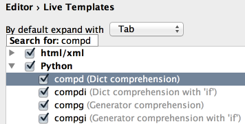

In the Live Templates settings, use speed search to find templates with certain text in the template abbreviation, body or description.
Start typing the desired text, and the list of available templates will shrink to show matching templates only:
